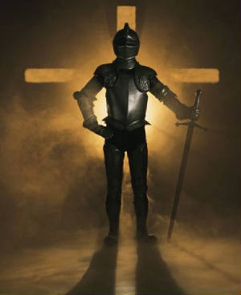

How to Put on the Full Armor of God: Ephesians 6:10-18
Because My Mind Needs Renewing Every Day and Because the Devil
Tries to Lie to Me About Who I am in Christ
Since the Battle is Also for Our Emotions

“I put on the breastplate of righteousness now Lord and I thank
You Lord Jesus that You are my breastplate and You are my
Righteousness. You have declared me to be righteous in Your sight and
worthy before You. You’ve justified me.
Help me to walk now in Your truth and righteousness at all times.
Please protect my emotions today. I come against and take authority
over... (name whatever the enemy
attacks you with or whatever tempts you or that you struggle with, i.e.
strife, heaviness, oppression, pride, a critical spirit,
discouragement,discontentment, lust, fantasy, etc. Do it boldly,
recognizing your authority as a believer).”
Because the Devil Tries to Steal Our Peace and Joy
“Father, I shod my feet with the preparation of the gospel of
peace...Thank You that You are my peace and my joy; fill me now with
Your Spirit and help me to abide in Your peace, in Your joy, in Your
love and in the power of the Holy Spirit, at all times, no matter what
the difficulties or circumstances.”
Because the Devil Tries to Bring Doubt
“Father, in addition to all that I take up the shield of faith,
with which I will be able to extinguish all the fiery-tipped darts of
the evil one, for You are my shield and You are my faith.
Thou, O Lord, art a shield about me; You are my glory and the lifter of
my head. Help me today to be full of faith and full of the Holy Spirit;
help me to walk by faith and not by sight or emotions, in the Spirit
and not in the flesh. Help me to trust You, to rest joyfully in You; to
be settled, surrendered and submitted to You; to be persevering and
discerning at all times.”
Because the Battle is for the Mind
“Father, I put on the helmet of salvation and I ask You to
protect my mind and my thoughts; help me to think like You, to act like
You and to respond like You at all times, in the name of Jesus. Help my
mind to be off limits and impenetrable by the devil.”
Because of My Need to be Bold in this Battle and to Speak the Word
of God Against My Enemies
“Father, I take up the sword of the Spirit, which is the word of
God, and Iask You to help me to speak Your word with all boldness,
authority and power, quickly against the devil, in the name of
Jesus.”
Now, clothe yourself with Christ (from Colossians 3): “I clothe
myself with humility, with love and compassion, with kindness and
gentleness, with patience and self-control, with holiness and purity
and with forgiveness. Please help me to walk this way before You and
man at all times today, in the name of Jesus, amen!”
Pastor Brad Matthew Abley
South Hills Community Church
www.southhills.cc